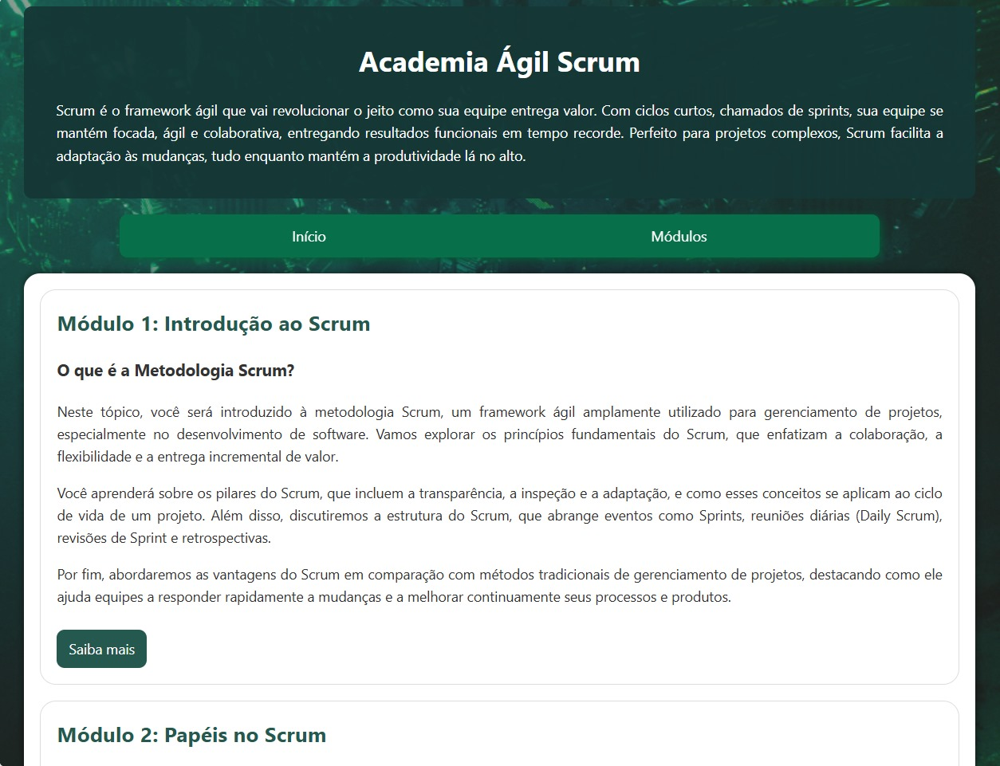
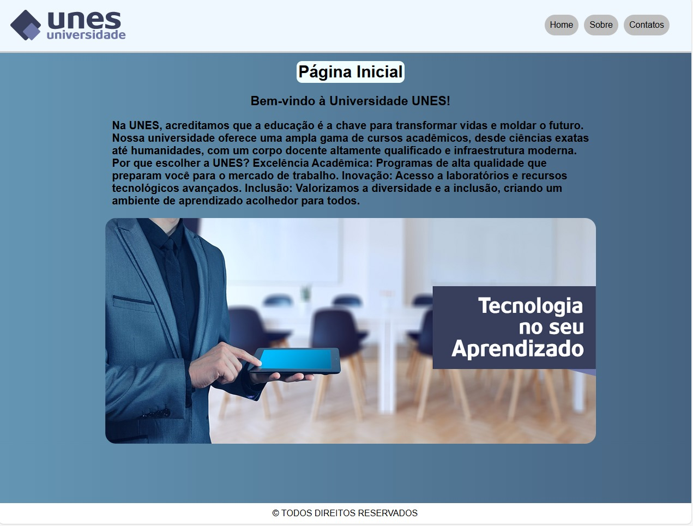
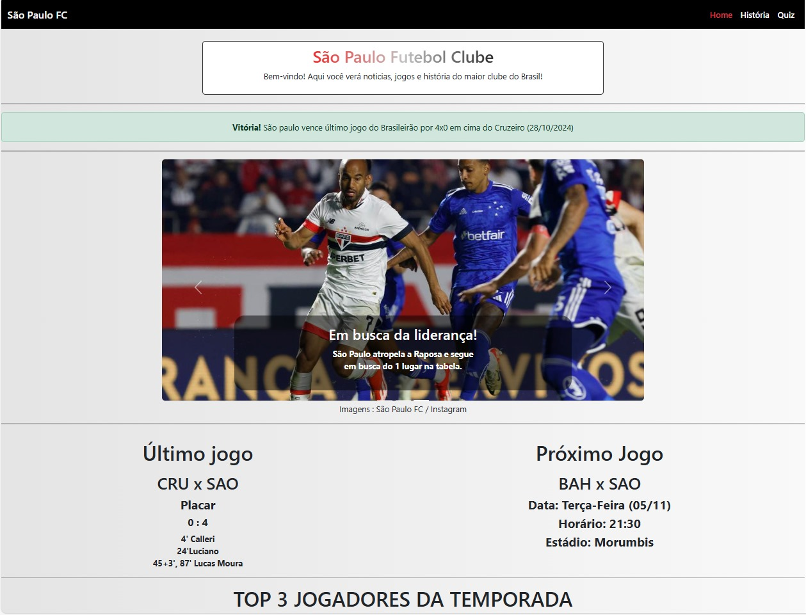
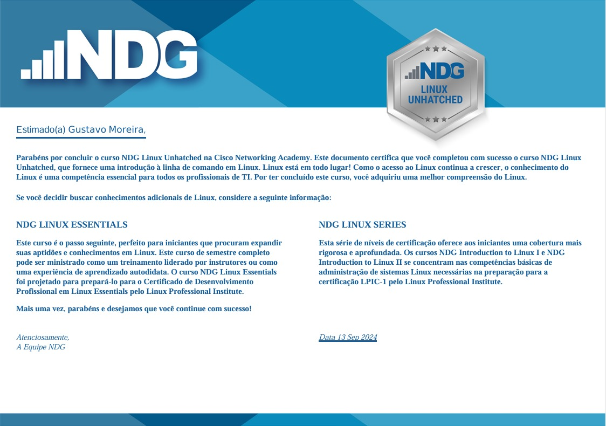
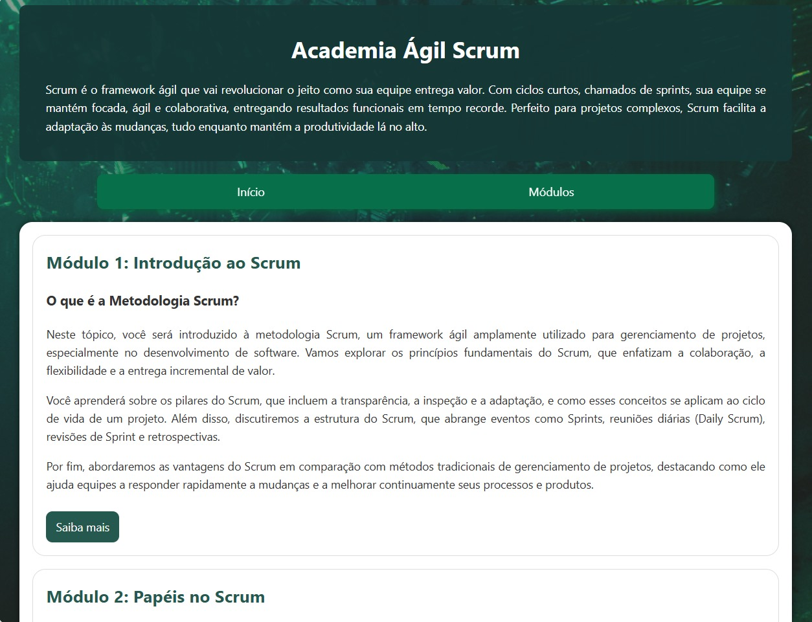
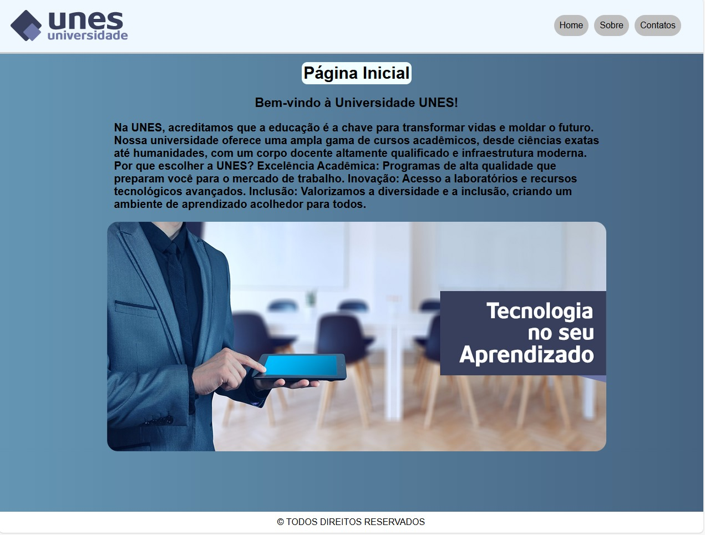
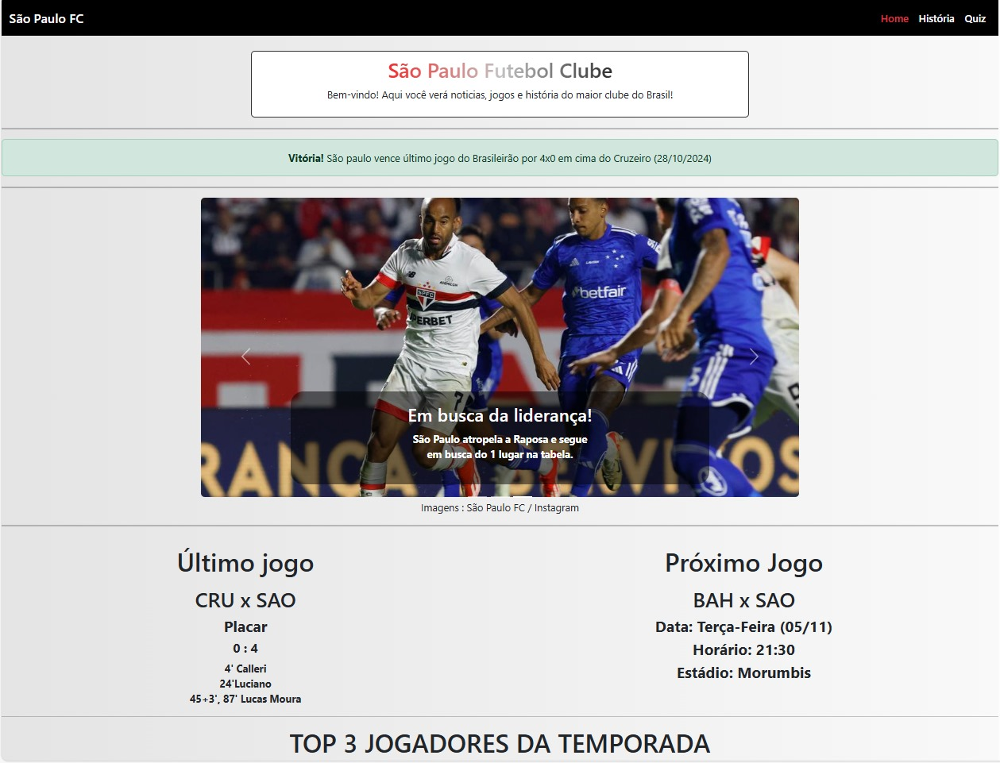

Gustavo Moreira
Estudante de programação
Novo na carreira de desenvolvimento web e de sistemas, sempre interessado em aprender mais, com bom desempenho em design, criação e reinovação de programas e websites.
Sobre Mim
Meu nome é Gustavo Santos Moreira, 18 anos, moro em São José dos Campos - SP sou um estudante da FATEC Professor Jessen Vidal cursando Análise e Desenvolvimento de sistemas, estou no primeiro semestre e previsão de conclusão de curso em 01/08/2027.
Sempre fui um fã de tecnologia, acompanhando novidades desde criança, desde lançamentos de inovações na industria, atualizações de hardwares e softwares, cyber-segurança, e jogos online.
Em 2024 inicio profissionalmente minha carreira através do curso de ADS, que já me ajudou com projetos e metodologias que eu não conhecia e está me ajudando a aprender mais, oque me leva mais perto do sonho de se tornar um programador full-stack.
Habilidades
- HTML
- CSS
- Python
- JS
- Bootstrap
Idiomas
Inglês - Nivel B2
Espanhol - Nivel Básico
Projetos
API
- Projeto em desenvolvimento com outros membros da Fatec cursando o mesmo curso que eu, desenvolvendo um web site que ajude a empresas a aplicar a metodologia agil dentro da sua equipe.
-Tecnologias Usadas: JS, Html, CSS
Link código: Clique Aqui

Faculdade
- Web site desenvolvido para treinar aplicações HTML e CSS.
-Tecnologias Usadas: Html, CSS
Link código : Clique aqui

Site São Paulo FC
- Web site desenvolvido para aprender e aplicar o Bootstrap.
-Tecnologias Usadas: Html, CSS, Bootstrap, JS
Link código : Clique aqui

Carreira
04/23 - 12/23
Curso de programação - CTRL+Play
08/24 - Presente
Faculdade - Analise e Desenvolvimento de Sistemas
Certificações
Certificação em Linux pelo Cisco Netacademy

- HTML
- CSS
- Python
- JS
- Bootstrap
Espanhol - Nivel Básico
Projetos
API
- Projeto em desenvolvimento com outros membros da Fatec cursando o mesmo curso que eu, desenvolvendo um web site que ajude a empresas a aplicar a metodologia agil dentro da sua equipe.
-Tecnologias Usadas: JS, Html, CSS
Link código: Clique Aqui

Faculdade
- Web site desenvolvido para treinar aplicações HTML e CSS.
-Tecnologias Usadas: Html, CSS
Link código : Clique aqui

Site São Paulo FC
- Web site desenvolvido para aprender e aplicar o Bootstrap.
-Tecnologias Usadas: Html, CSS, Bootstrap, JS
Link código : Clique aqui

04/23 - 12/23
Curso de programação - CTRL+Play
08/24 - Presente